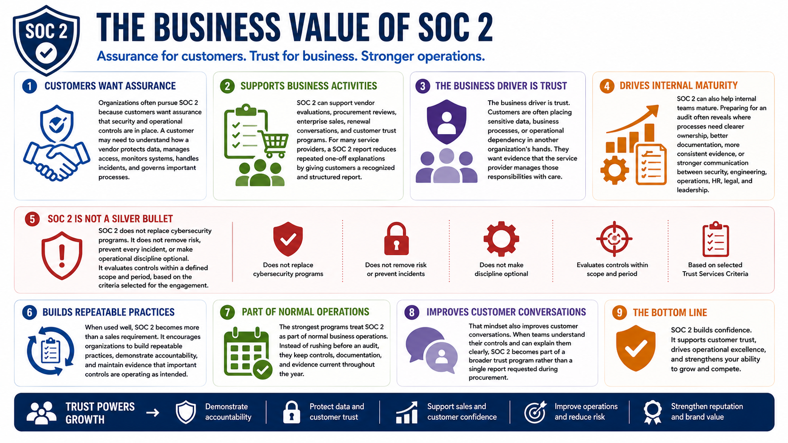

What Is SOC 2?
Why Organizations Pursue SOC 2
Connecting to LMS... Progress: in progress
Version 1.0 | Date: 2026-06-16 | Educational overview of SOC 2 concepts, controls, evidence, and trust.

Narration
Organizations often pursue SOC 2 because customers want assurance that security and operational controls are in place. A customer may need to understand how a vendor protects data, manages access, monitors systems, handles incidents, and governs important processes.
SOC 2 can support vendor evaluations, procurement reviews, enterprise sales, renewal conversations, and customer trust programs. For many service providers, a SOC 2 report reduces repeated one-off explanations by giving customers a recognized and structured report.
The business driver is trust. Customers are often placing sensitive data, business processes, or operational dependency in another organization's hands. They want evidence that the service provider manages those responsibilities with care.
SOC 2 can also help internal teams mature. Preparing for an audit often reveals where processes need clearer ownership, better documentation, more consistent evidence, or stronger communication between security, engineering, operations, HR, legal, and leadership.
SOC 2 does not replace cybersecurity programs. It does not remove risk, prevent every incident, or make operational discipline optional. It evaluates controls within a defined scope and period, based on the criteria selected for the engagement.
When used well, SOC 2 becomes more than a sales requirement. It encourages organizations to build repeatable practices, demonstrate accountability, and maintain evidence that important controls are operating as intended.
The strongest programs treat SOC 2 as part of normal business operations. Instead of rushing before an audit, they keep controls, documentation, and evidence current throughout the year.
That mindset also improves customer conversations. When teams understand their controls and can explain them clearly, SOC 2 becomes part of a broader trust program rather than a single report requested during procurement.